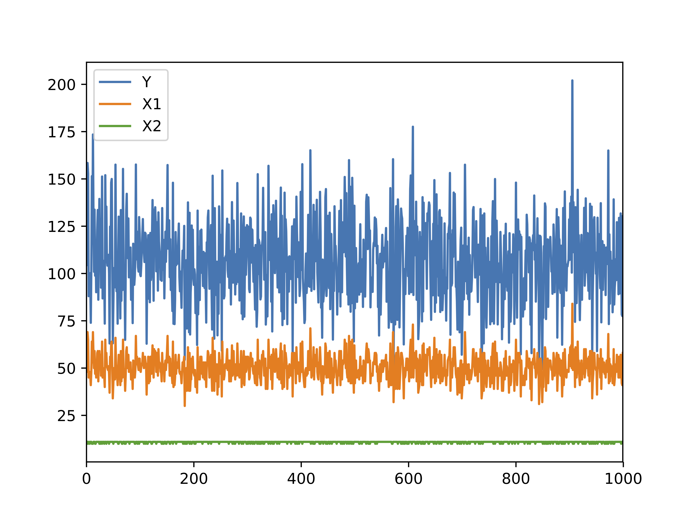

Chapter 2 Basic tools
In this Chapter, we present basic tools that will be important when interacting with big data systems, most importantly the command-line interface (CLI) in a Unix shell and several utilities (less, awk, vi and make).
2.1 Command line tools
We assume some familiarity with the Unix shell, for example as in http://swcarpentry.github.io/shell-novice/.
We also assume that you have access to a shell, either because you use Linux or OS X or because you have the right tools on Windows (for example Cygwin or the Bash shell in Windows 10).
2.1.1 Why use the command line?
Batch processing
Cluster and cloud computing
2.1.2 Basic Unix commands
2.1.3 Useful tools
2.1.3.1 less
2.1.3.2 awk
2.1.3.3 vi
2.1.4 Example
Let’s apply some of the techniques described in Blackwell and Sen (2012) on Fisher’s Iris data set saved in tab-delimited format. Of course, it is a small dataset easily processed with R:
iris <- read.table("~/Dropbox/Data17/iris/iris.tab")
head(iris, n = 5)## Sepal.Length Sepal.Width Petal.Length Petal.Width Species
## 1 5.1 3.5 1.4 0.2 setosa
## 2 4.9 3.0 1.4 0.2 setosa
## 3 4.7 3.2 1.3 0.2 setosa
## 4 4.6 3.1 1.5 0.2 setosa
## 5 5.0 3.6 1.4 0.2 setosaIn a shell, we can use:
head -n 6 ~/Dropbox/Data17/iris/iris.tab## "Sepal.Length" "Sepal.Width" "Petal.Length" "Petal.Width" "Species"
## "1" 5.1 3.5 1.4 0.2 "setosa"
## "2" 4.9 3 1.4 0.2 "setosa"
## "3" 4.7 3.2 1.3 0.2 "setosa"
## "4" 4.6 3.1 1.5 0.2 "setosa"
## "5" 5 3.6 1.4 0.2 "setosa"Suppose that we only need to select two variables in our model, Sepal.Length and Species. In R, we can use:
iris_subset <- iris[, c("Sepal.Length", "Species")]or
iris_subset <- iris[, c(1, 5)]
head(iris_subset)## Sepal.Length Species
## 1 5.1 setosa
## 2 4.9 setosa
## 3 4.7 setosa
## 4 4.6 setosa
## 5 5.0 setosa
## 6 5.4 setosaWith the tidyverse, we can use pipes. The %>% operator allows for performing chained operations.
suppressMessages(library(dplyr))
iris %>%
select(1, 5) %>%
head()## Sepal.Length Species
## 1 5.1 setosa
## 2 4.9 setosa
## 3 4.7 setosa
## 4 4.6 setosa
## 5 5.0 setosa
## 6 5.4 setosaIn a shell, the pipe operator to combine shell commands is | and we can use:
cut -f 1,5 ~/Dropbox/Data17/iris/iris.tab | head -n 7## "Sepal.Length" "Species"
## "1" 0.2
## "2" 0.2
## "3" 0.2
## "4" 0.2
## "5" 0.2
## "6" 0.4To keep observations with “Sepal.Length” greater than 5:
iris %>%
filter(Sepal.Length > 5) %>%
head()## Sepal.Length Sepal.Width Petal.Length Petal.Width Species
## 1 5.1 3.5 1.4 0.2 setosa
## 2 5.4 3.9 1.7 0.4 setosa
## 3 5.4 3.7 1.5 0.2 setosa
## 4 5.8 4.0 1.2 0.2 setosa
## 5 5.7 4.4 1.5 0.4 setosa
## 6 5.4 3.9 1.3 0.4 setosaIn the shell, we can use the AWK programming language. We start from row NR 2 (we could start from row 1, it contains variable names) and select rows such that the second variable (Sepal.Length) is greater than 5.
awk 'NR == 2 || $2 > 5' ~/Dropbox/Data17/iris/iris.tab | head## "1" 5.1 3.5 1.4 0.2 "setosa"
## "6" 5.4 3.9 1.7 0.4 "setosa"
## "11" 5.4 3.7 1.5 0.2 "setosa"
## "15" 5.8 4 1.2 0.2 "setosa"
## "16" 5.7 4.4 1.5 0.4 "setosa"
## "17" 5.4 3.9 1.3 0.4 "setosa"
## "18" 5.1 3.5 1.4 0.3 "setosa"
## "19" 5.7 3.8 1.7 0.3 "setosa"
## "20" 5.1 3.8 1.5 0.3 "setosa"
## "21" 5.4 3.4 1.7 0.2 "setosa"~/Dropbox/Data17/iris/iris.csv. Use AWK and tail to select the last 5 observations where Sepal.Width is larger than 3.5 and Petal.Length is smaller than 1.5.
2.2 Makefiles
make is a tool that helps put all the pieces of an analytic workflow together:
- data retrieving
- data cleaning
- analysis
- graphs
- reports
- …
Dependency management
2.2.1 Simulate data in R
set.seed(123)File simulate_data.R
# set.seed(123)
N <- 1000 # sample size
X1 <- rpois(n = N, lambda = 50)
X2 <- 10 + rbinom(n = N, prob = 0.8, size = 1)
Y <- 10 + 3 * X1 + -5 * X2 + 3 * rnorm(n = N)
write.csv(data.frame(Y = Y, X1 = X1, X2 = X2),
"sample_data.csv", row.names = FALSE)head(data.frame(Y = Y, X1 = X1, X2 = X2))## Y X1 X2
## 1 88.74430 46 11
## 2 125.77081 58 11
## 3 70.76396 38 10
## 4 110.32157 50 10
## 5 145.79546 62 11
## 6 109.45403 53 112.2.2 Create a plot in Python
File create_graph.py
import pandas as pd
import matplotlib.pyplot as plt
sim_data = pd.read_csv("sample_data.csv")
plt.figure()
sim_data.plot()
plt.savefig("plot.pdf", format = "pdf")
2.2.3 Run statistical model in R
We can print the model output with:
sim_data <- read.csv("sample_data.csv")
summary(lm(Y ~ X1 + X2, data = sim_data))##
## Call:
## lm(formula = Y ~ X1 + X2, data = sim_data)
##
## Residuals:
## Min 1Q Median 3Q Max
## -8.3988 -1.9452 -0.0261 2.0216 9.1066
##
## Coefficients:
## Estimate Std. Error t value Pr(>|t|)
## (Intercept) 9.09087 2.54667 3.57 0.000374 ***
## X1 3.00531 0.01326 226.68 < 2e-16 ***
## X2 -4.94658 0.22876 -21.62 < 2e-16 ***
## ---
## Signif. codes: 0 '***' 0.001 '**' 0.01 '*' 0.05 '.' 0.1 ' ' 1
##
## Residual standard error: 2.936 on 997 degrees of freedom
## Multiple R-squared: 0.9811, Adjusted R-squared: 0.981
## F-statistic: 2.585e+04 on 2 and 997 DF, p-value: < 2.2e-162.2.4 Run statistical model in R
To save the output, we use the sink function.
File estimate_model.R
sim_data <- read.csv("sample_data.csv")
summary(lm(Y ~ X1 + X2, data = sim_data))
sink("estimation_summary.txt")
summary(lm(Y ~ X1 + X2, data = sim_data))
sink()2.2.5 Makefile syntax
makeis a command that runs on a text file often namedMakefile.A
Makefilecontains one or several blocks with the following structure:
targetfile: sourcefile(s)
[tab] command2.2.6 Naive version
File: Makefile
sample_data.csv: simulate_data.R
R CMD BATCH simulate_data.R
plot.pdf: create_graph.py
python create_graph.py
estimation_summary.txt: estimate_model.R
R CMD BATCH estimate_model.RA simple call to make only builds the first target (sample_data.csv). To build the other targets, we have to use: make plot.pdf and make estimation_summary.txt.
2.2.7 Making all targets
File: Makefile
all: analysis
analysis: sample_data.csv plot.pdf estimation_summary.txt
sample_data.csv: simulate_data.R
R CMD BATCH simulate_data.R
plot.pdf: create_graph.py
python create_graph.py
estimation_summary.txt: estimate_model.R
R CMD BATCH estimate_model.RNew data is simulated and saved in sample_data.csv. But plot.pdf and estimation_summary.txt are not updated.
2.2.8 Dealing with dependencies
- Problem
plot.pdfandestimation_summary.txtdepend onsample_data.csv. - Solution: explicit dependencies.
File: Makefile
all: analysis
analysis: sample_data.csv plot.pdf estimation_summary.txt
sample_data.csv: simulate_data.R
R CMD BATCH simulate_data.R
plot.pdf: sample_data.csv create_graph.py
python create_graph.py
estimation_summary.txt: sample_data.csv estimate_model.R
R CMD BATCH estimate_model.R2.3 Git and GitHub
Guest lecture by Ista Zahn.
References
Blackwell, Matthew, and Maya Sen. 2012. “Large Datasets and You: A Field Guide.” The Political Methodologist 20 (1): 2–5. https://scholar.harvard.edu/files/msen/files/blackwell_sen_tpm.pdf.